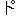

アイヌ語の地名を調べていると、海岸、または河岸の洞窟に、あの世へ行く道の入口だというものが意外に多い。それらの洞窟は、だいたい次のような名で呼ばれている。
（一）アふンパ Ah
Ah n-par（入る・口）。アふンパロ Ahn-paro（入る・その口）。――
n-par（入る・口）。アふンパロ Ahn-paro（入る・その口）。――胆振 地方で。
Ahn-par（入る・口）。アふンパロ Ahn-paro（入る・その口）。――（二）アふンルパ Ahn-ru-par（入る・道・口）。アふンルパロ Ahn-ru-paro（入る・道・の口）。――胆振、日高 国沙流 、旭川市近文 などで。
Ahn-ru-par（入る・道・口）。アふンルパロ Ahn-ru-paro（入る・道・の口）。――胆振、（三）アふンルチャ Ahn-ru-char（入る・道・口）。アふンルチャロ Ahn-ru-charo（入る・道・の口）。――北海道北部地方で。
Ahn-ru-char（入る・道・口）。アふンルチャロ Ahn-ru-charo（入る・道・の口）。――北海道北部地方で。（四）アふンポール Ahn-poru（入る・洞窟）。――日高国静内 地方で。
n-poru（入る・洞窟）。――日高国（五）オまンルパ Om n-ru-par（奥へ行く・道・口）。オまンルパロ Omn-ru-paro（奥へ行く・道・の口）。――胆振、日高などで。
n-ru-par（奥へ行く・道・口）。オまンルパロ Omn-ru-paro（奥へ行く・道・の口）。――胆振、日高などで。
Omn-ru-par（奥へ行く・道・口）。オまンルパロ Omn-ru-paro（奥へ行く・道・の口）。――胆振、日高などで。（六）うぇンルパ W n-ru-par（悪い・道・口）。うぇンルパロ Wn-ru-paro（悪い・道・の口）。――石狩国
n-ru-par（悪い・道・口）。うぇンルパロ Wn-ru-paro（悪い・道・の口）。――石狩国上川 地方で。
Wn-ru-par（悪い・道・口）。うぇンルパロ Wn-ru-paro（悪い・道・の口）。――石狩国（七）オぽ ナル O-p
ナル O-p kna-ru（そこから・下方へ行く・道）。――北見国
kna-ru（そこから・下方へ行く・道）。――北見国網走 地方で。
ナル O-pkna-ru（そこから・下方へ行く・道）。――北見国（八）ぽールチャ Pru-char（洞窟の・口）――日高国様似 地方で。
Pru-char（洞窟の・口）――日高国（九）ぽール Pru（洞窟）。――北海道いっぱん。
ru（洞窟）。――北海道いっぱん。（十）※［＃半濁点付き平仮名と、139-8］ッソ Tsso（洞窟）。――樺太いっぱん。
sso（洞窟）。――樺太いっぱん。（十一）ペしゅィ Pesy（洞窟）。――北海道北見 ・釧路 地方で。
これらの中には、たんに洞窟の意にすぎないものもあるが、大体は名そのものがあの世へ行く道の入口であることを示しているものが多く、それにからんでいろいろと伝説や信仰が語り伝えられているのがふつうである。y（洞窟）。――北海道この種の洞窟は海岸や河岸の断崖にある横穴とふつうには考えられているようであるが、かならずしもそうではない。滝つぼがそれだというのもあり、海中の岩礁についている穴であることもある。さいきん調査した登別のアフンルパ
は、高台の上に人為的に掘った竪穴であった。この種の洞窟が本来何であったかは、まだよく分らない。それらが古く祭儀――とくに海の――に関して用いられたものであろうということだけはほぼ察しがつくけれども、現実の宗教生活の中でそれがどのように用いられたものか、具体的なことは何ひとつ明らかにされていない。それを明らかにする鍵は、この種の洞窟をしらみつぶしに実地踏査することと、それらにまつわる伝承資料の蒐集検討の中にかくされているであろう。
本稿は、この種の洞窟にまつわる伝承資料を先ず紹介し、あわせて
の踏査の結果を報告しようとするものである。アイヌの散文物語の一種、
が出てくる。これは前に説明したように、あの世へ行く道の入口ということで、酋長談の中では海岸の洞窟か、山奥の河岸の洞窟とされている。そしてこの種の物語は、アフンルパを通って生きながらあの世へ行って来た人の帰来談として語られるのがふつうである。われわれはそれを読むことによって、アフンルパや、あの世のありさまや、人間の死などについてアイヌがどのような観念をもっていたかをつかむことができる。最初に
おれには父さん母さん大きい兄さん小さい兄さんがあった。おれは末っ子で、みんなに可愛がられ、何不自由なく暮らして、今はあちらこちら走り使いにやられるほど大きくなった。ところが、父さんも、母さんも、兄さんだちも、何の病気か、ほんの二、三日寝こんだかと思うと、ぽっくりと死んでしまって、おれはたちまち独りぼっちになってしまった。村の人々は独りぼっちのおれをなにくれとなく慰めてくれ、何かうまいものがあればいちばん先におれに届けてくれた。
ところで、おれには叔父がひとりあって、村の
その叔父が、ある日何と思ったか、にこにこしながらやって来て、おれを山狩りにさそった。叔父のことだからどうせろくな考えではあるまいと、心の中で神々に祈りながらついて行くと、ずっと山奥に大きな
「これ、わしのかわい甥よ、おまえこの穴から先に入ってみなさい。わしもすぐ追っかけて行くから……」
後から追っかけて来るなんて、どうせうそにきまっていると思ったが、勇気をふるい起しておれは穴の中へ入って行った。穴はどこまでも長く続いていて、おれの行く手が明るくなると後が暗くなり、後が明るくなると行く手が暗くなる、という状態をくりかえしながら見て行くと、とつぜん思いもかけない美しい村に出た。
見れば海はひろびろと凪ぎわたっている。沖には弁財船が岩礁のように浮んでいて、そこと岸辺の間を荷揚げの小舟が行ったり来たりしている。その岸辺にはおびただしい家数を持った村が展開していて、奥の家々は森の中にまぎれこみ、前の家々は海にまでせり出して来ている。村はずれに大きな川がしらじらと光っていて、何の魚であろうか、下方の群を川底の砂がこすり、上方の群を日光がこがしている。村へ入ろうとする所に大きな土饅頭、小さな土饅頭が重なりあうように列をなして並んでいる。そのそばに男の墓標女の墓標が林立している。奥の方から、若い男女が下りて来ておれのそばを通るのに、ちっともおれの方を見ない。あらぬ方ばかり見て通る。ときどき、おれがまだ小さい頃、村で見たことのある病死した男や女が通りかかるのだけれども、やはりおれの方を見ずに、あらぬ方ばかり見て通りすぎるのである。ただ犬だけは、おれに向って猛烈に吠える。するとその連中はふしぎそうな顔をする。
海辺に黒々と人だかりがしているのでそこへ行って見ると、舟から荷物を揚げるのを大勢の人々が見物しているのであった。その連中のなかに、思いもかけず、父さんや母さんがいた。昔よりずっと若く元気でにこにこしながら荷揚げするのを見ている。誰ひとりおれの方を見るものがない。父さん、母さん［＃「母さん」は底本では「母きん」］と言って飛びつきたいのをがまんして見ていると、いま着いたばかりの荷揚げ舟の中から、思いもかけぬ兄さんだちが、これまたすこぶる若く元気な様子で上って来た。おれのそばを通っても気づいた風もない。
その間も犬どもは絶えずおれに吠えかけている。すると村の老人たちは戸口に出て来て、何かぶつぶつ言いながら灰をぱっぱっとそこらへまきちらす。おれはふしぎに思ってそれを見ていると、大きい兄さんがそばへ来て、あらぬ方を見ながら、こう言った――
「これ、
におまえをだまして入らせたのである。アフンルパという穴は下方の国へ入る道をそういうのである。（ahun-ru-par ari a-ye suy anakne pokna-sir un ahun ru ene a-ye-i ne ruwene）死なずに生きたままでこの下方の国へ来た者は、上方の国へ戻ったとしても、長くは生きない。二、三日して死ぬ者もあり、二、三ヶ月して死ぬ者もあり、一年たって死ぬ者もある。と「村の中央のおれたちが奉仕している少年をどうした？ 殺したのならその死体をどこへやった？」
と、今日で十日あまり、毎日休まずに責めたてている。最初はおまえが帰ってこないのを内心よろこんでいたのだが、今は勝手に家宝の金銀の玉を盗むこともならず、おまけに毎日毎日ひまなく責めたてられるので、ゆっくり食事することもできないありさまだ。おまえはもう、
そこで、おれはふたたび犬どもに吠えられながらアフンルパ
の所へ来て、そこから前のようにおれの行く手が明るくなると背後が暗くなり、背後が明るくなると行く手が暗くなる、という状態をくりかえしながら、とうとう穴を走りぬけておれの村へ帰って来た。――この話はまだだいぶ長く続く。これから、この少年が叔父の家へ行って、村の人々に責めたてられている叔父をだまして、自分の身代りにアフンルパ
からあの世へ送りだしてやり、その後で美しい女をめとって、亡き父の後をついでウラシペッ村の酋長になり、村と共に栄えて行くてんまつが、散文物語特有のだらだらとした調子で語られて行くのである。しかし本稿当面の目的はすでに達しられたので、この辺で打ちきることにする。次ぎに掲げるのは
私はほんとうにえらい首領で、何不足ない暮らしをしていた。日本人の国へ交易にでかけた人たちがうまいもうけをするのを聞くたびに、ついうらやましくなって、おれもひとつでかけてみようかと、妻をかたらい、夫婦ふたりの相乗りで舟をこぎ、交易に行ったのだった。
ある日、どことも知らない海岸のけわしい崖山の前に、小さい砂浜があって、ここなら舟を引きあげて泊れそうに見えたので、その夜はここで泊ることに決め、砂浜に舟を引きあげて、なぎさによせあがった木を拾い集めてきて、火をもやし、飯をたきながら、ふと沖の方を見ると、大変だ。ものすごい大津波がこちらをめがけておしよせて、いまにもかぶさってきそうに見えるではないか。どうしていいかわからないので、妻の手をとって、崖山の方へ逃げのぼっていくと、崖くずれのところがある。その間をどんどん逃げてくると、そこに大横穴が見える。ここよりほかには通れそうなところもないと思って、その穴へ入っていった。奥は深く続いている。だんだん行くうちに、はじめはまっ暗であったのに、行く手がぼんやり明るくなってきた。なお、どんどん足にまかせて行くと、やがて景色がとてもきれいなところへ出た。
私たち夫婦はその景色に見とれながら行くと、道のそばには、人家のたくさん立ちならんだ村が見え、海岸には、いましも大きな弁財船（大形の和船）が港へ入ろうとしているところへ、村の人々が集ってくる。なお行くと、ある村のしもてに、他の家とは少しかけはなれて、一軒の家が立っていた。私たちは、その家の戸口に立って、おとないを知らせる咳払いをして待っていると、中から家の主婦らしい女が現われて、「早くおはいり」といったので、中に入った。
この家の主人は、いかにもひとかどの首領らしいりっぱな男で、私たちに向ってていちょうに初対面のあいさつをした。そして私に「どうしてここへ来たか」とたずねるので、かくかくしかじかと、いままでのことを残らず話すと、家の主人はこういった。――
「やっぱり、おれたちもおまえたちのようにして、この国にやって来た者だ。ここは死人の来る国なのだ。この
おれたち夫婦は、熊の皮、鹿の皮、熊の胆の束をみやげにもらい、別れを告げて、ふたたびもと来た道をもどって来た。横穴の途中で、私たちの顔見知りの村の老爺が、
しばらくして、ある日、
さて、私たちが下界で会ったあの夫婦は、ほんとうは肉体を持って生きている人たちだから、ふつうの死者のような
（久保寺逸彦「アイヌ昔話、死者の国」――雑誌『遺伝』1955年８月アイヌ族特集号）
（１）あの世から来た幽霊の姿がわれわれの目には見えぬように、この世から生きながらあの世に行った人の姿はあの世の人々の目には見えない。
（２）ただし犬だけは、この世の犬があの世から来た幽霊の姿を見ることができるように、あの世の犬もこの世から生身を持って行った人々の姿を見ることができる。そういうように人の目には見えぬ者の姿を見て犬が吠えるのをあの世でも「くレミ
」（kr-e-mik 幽霊・に・吠える）と云っている。つまりこの世では肉体のないのが幽霊だが、あの世では［＃「あの世では」は底本では「この世では」］肉体のあるのが幽霊で、まったくあべこべである。（３）この世とあの世とでは夜と昼が［＃「夜と昼が」は底本では「夜の昼が」］あべこべである。
（４）この世とあの世とでは時間の経過の尺度がちがう。あの世で数時間すごしたばかりだと思ったのが、この世へ帰って来てみると十数日も経過している。
（５）あの世の物を食ったら、もはやこの世へ帰って来られない。いわゆる「よもつへぐい」の思想である。
（６）あの世から帰って来た者はまたすぐに死ぬ。長くて一年。ただし誰かを身代りにやれば、その人は逆に長く生き栄える。
（７）あの世は地下にあるので、「ぽ
ナモシ」pkna-mosir（下方の国）と呼ばれ、また「カむィコタン」Kamy-kotan（神の国）とも呼ばれる。そこは善人の魂の安住するたのしい世界である。従ってわれわれが問題にしているような洞窟、すなわちあの世への入口を地獄穴と訳すのは正しい訳とは云いかねる。むしろ室蘭本線、
と称する洞窟がある。それについて、次のような伝説が伝えられている。むかし、アブタの酋長が、妻に死なれて、悲嘆のあまり、何もする気がなくなり、寝てばかりいた。そこへある日、気の合う男がやって来て、
「おまえも早く来たらどうだと、あの世からことずてがあったぜ」
とからかった。からかわれた男はぶりぶり恐りながら舟に乗ったが、舟の中にぱったり倒れて、それっきり動かなくなってしまった。逆にあの世へ行って来た男は長生したという。（幌別村出身、故知里イシュレ
翁より筆者聞書）おまえも早く来たらどうだうんぬんというのは、いわゆる「イた
・キる」itk-kir（ことばを・ひっくりかえす）、あるいは「ほカ・イた hrka-itk（さかさ・ことば）というやつで、禍を転じて福となすためによく使われる手である。それを使ったので、あの世へ行って来た男が長生きし、待っていた男が身代りに死んでしまったわけである。室蘭市内、
二つの洞窟がおたがいに通じていて下は地獄に達しているというのは、あの世へ行く道が途中で二つに分れていて、一方はそのままあの世へ通じ、他方は外部にある他の洞窟に通じているということで、後出のいくつかの伝説が示すように、北方へ行くとそれはふつうの考え方である。なお、ここで地獄といっているのは、もちろん
ある
翁談）ここに入った人の話はきいたことはないが、犬を入れてやるとぜったいに出てこないということである。
（元室蘭 、室村 三次郎翁談、――更科源蔵『北海道伝説集、アイヌ篇』19ページ）
日高国沙流郡
プ」sr-putu（沙流川の川口）、その名の通り沙流川の川口にある町である。その富川駅のやや下手の右岸の崖に洞穴があって、オマンルパロ（奥へ行く道の入口）とよばれている。それについて、次のような伝説が伝えられている。昔、妻に先立たれて寂しく暮らしていた男が、或時海辺へ仕事に行くと、亡くなった妻とそのままの一人の女が見馴れない着物を着て
この伝説の中で、あの世の女が急に死んでそこで葬式が行われたというのは、気にかかる書き方である。あの世では死がないというのがアイヌの説話に普遍的な信仰だからである。地獄穴などという呼称が、まちがいであることはもちろんである。
昔、妻を亡くして淋しく暮らしている若者があった。ある日シリパ岬の沖に出て漁をしていると、シリパ岬の絶壁の下の磯で、夢中になってノリをとっている一人の女の姿を発見した。人の近よれない所に人がいるので、よく見ていると、亡くなった妻によく似ている。舟を磯に近よせてみると、夢にも忘れぬ妻の顔であった。狂喜して磯に飛び上ったところ、女はびっくりして後も見ずに逃げだしたので、若者は大声で女の名を呼びながら追って行くと、女は日ごろ人々が恐れて近よらぬ洞窟の中へ逃げこんだ。若者も続いて飛びこんでみると、ふしぎなことに洞窟の中は真暗でなく明るい。しかも立派な部落が見えていて、女はその方へどんどん逃げていく。若者も後を追って走って行くと、そこには死んでしまったはずの人々ばかりいる。そのうち一軒の家から一人の老人が出て来て、
「ここはまだ、おまえの来るところではない、早く帰れ！」
と云って、いくら頼んでもききいれてもらえず、とうとう追い返されてしまった。
新しい妻の姿を見ながらむなしくヨイチに帰った若者は、失望のあまりそれきり仕事も手につかず、ブラブラしているうちに死んでしまった。それ以来この洞窟をこの世を終って地獄へ行く路の入口といって、
「地獄へ行く路の入口といって、
沙流川の上流ニセウという所の少し下の方に、オマンルパロ（あの世に行く路の入口）がある。それを知らない一人の老人が、この穴に一匹の狐が入って行くのを見て、ひとつ捕えてやろうと入口で待っていたが、いくら待ってもなかなか出て来ないので、そこで穴の中に入って探してやろうと穴にもぐりこんだ。穴の口は僅か光が入るほどの狭さで、中は真暗であったが、だんだん入って行くと明るい所に出た。そこには大勢の幽霊がうようよしていた。しかし幽霊の方からは老人の姿が見えないらしいので平気で歩いて行くと、老人の爪先につまずいたり膝にぶつかったりするたびに、幽霊の方がバタバタと死んでしまうので、気持が悪くなって急いで穴から逃げ出して来たという。
（吉田巌氏採集、『人類学雑誌』二九巻一〇号――『北海道伝説集』69ページ）
あの世の人々はあの世においては幽霊ではない。従って「そこには幽霊がうようよしている」という表現には採集者の私意が加わっているようである。「幽霊の方がバタバタと死んでしまった」という云い方も、アイヌ説話に普遍的な信仰と矛盾するので気にかかる。日高国沙流郡
（『平取外八ヶ村誌』――『北海道伝説集』63―４ページ）
ビホロの方言ではオマンルパロではなく、オマンルチャロ（om
n-ru-charo 奥へ行く・道・の口）と云うはずである。むかし、ふたりの老人が狩のためにこの山の附近に行くと、一匹のムジナが地獄穴に入って行くのを見た。するとまもなく、ムジナが追われるようにして穴から飛びだして来た。そしてその後から弓を持ったひとりの男が出て来て、びっくりしたようにきょろきょろあたりを見ていたが、またあわてて穴の中へ戻って行ったので、穴の中に何かあるのではないかと、老人たちもその後を追って入ってみた。すると穴はしだいに狭くなって、やっと這って通れるくらいになったが、そこを通り越すとまた広くなって、やがて明るい所へ出た。見るとそこには山も川もあり、ムジナや魚もたくさんいて、どっさり魚をつるした家々があって、犬がしきりに吠えついて来たが、そこにいる人間は老人たちの来た姿が見えないらしく、犬が吠えるので、
「ばけものでも来たのではないか、ぼろをいぶして魔よけにしろ！」
といって、ぼろに火をつけていぶしていた。老人たちはそこを引き返して戻ろうとすると、ばかに着物が重くなったので、よく見るといつのまにか着物の裾にたくさんの人間がぶら下っている。それをとって投げとって投げして、やっともとの穴から外に出て来た。ひとりの老人が、
「おれはああいう部落 がすきだ、あそこに住んでみたいものだ」
と言うと、ひとりの老人は、
「おれはなんだかきらいな部落だな」
と反対した。それからまもなく、すきだと言った老人は死んでしまい、きらいだと言った老人はいつまでも長生きをした。この老人たちの話で、この穴があの世に通じている地獄穴であることが分った。（アサヒガワ市チカブミ、川村ムイサシマツ婆さんから更科源蔵氏採集――『北海道伝説集』266―７ページ）
石狩川の支流
むかし、ふたりの上川アイヌが、人のきらうこの穴を探って見ようと、穴の中へ入って行ったら、穴がしだいに狭くなって立って歩くことができなくなったので、やっとのこと這い進んで行くうち、急に明るくて広い所へ出た。ふたりはわかれわかれに別の道を進むことにした。ひとりが行った道は、さらに広い野原に出た。その野原を越えて行くと海辺に出てしまった。そしてそこに一そうの舟があったので近よってみると、死体がいっぱい入っていて、どこから集って来たのか多くの犬が吠えつき、今にもかみつこうとするので、それを追い払っていると、とつぜん頭の上の空から、
シリタルトナシ フンアナ（死魂早いなア）
という声がした。その人はびっくりして、まだ自分は死んでいないのに、死魂だなんて言ってと腹を立てて、大いそぎで犬に追われながらもと来た穴に入って、やっと出て来ることができた。すると途中で別れて行ったもうひとりも、やはり同じめにあったというので、それからこの穴は地獄に入る穴だろうといって、誰も入る者がなくなった。（永田方正『蝦夷雑話』――『北海道伝説集』267―８ページ）日高国
このウコイに、むかし洞窟があり、附近にときどき人の姿が見えるので近よってみると、いつのまにか消えてしまう。それであの世に通じる穴だと云われていた。穴の入口は狭くてやっと人間が這って通れるくらいだがすこし行くと広くなって明るくなり、そこには海が見えて川や立派な村があり、海岸では引き網をしているし、川では丸木船に乗って魚をとっている。近よってよく見ると、むかし自分の部落にいて死んだ人たちばかりで、ガヤガヤ云いながら働いているので声をかけてみても先方には聞えない。久しぶりなのでなつかしくて相手の体に手をかけると、手をかけた人はたちまち死んでしまう。そこには魚でも木の実や草の実でもめずらしいものばかりあるが、それをこの世へ持って来て食べると直ぐに死んでしまう。もしそこで死人に見つかって芥や灰を頭にかけられると、体にくっついて離れないが、入口の狭い所を這いだすときにとれてしまう。ここはこの世で夏のときは冬であり、夜のときは昼であるという。
（イブリ国ユウフツ郡ムカワ町字チン部落、片山カシンデアシ翁から更科源蔵氏採集――『北海道伝説集』34―５ページ）
十勝国
このカムイエロキに、むかしフレウとよぶ大きな怪鳥が住んでいた。フレウは毎日はるばる海まで行って鯨や魚などを捕って来て食べ、食べ残した骨を山のくぼみに投げちらかしていたが、食物に不自由がなかったためか、人間には悪戯をしなかった。ところが、あるとき、ひとりの女が、フレウの日ごろ飲んでいる小川の流れを、尻をまくってわたったので、フレウはひどく怒って、女をくわえて山のうしろに持って行き、そこへ投げすてて、遠い国へ飛んで行ってしまった。とり残された女は、フレウの食い残しの骨などしゃぶっていたが、やがて餓死してしまったようである。ところがその後何年かたって、一人の青年が熊狩りに出かけて道に迷い、このウェンシリに来て、鯨や魚の骨が散在しているのを見てびっくりしていると、とつぜん美しい女が現われて彼をさそった。青年は恐しくなって、女の手をふりもぎって逃げ帰ったが、それからはその女のまぼろしになやまされ、病み衰えて、とうとう死んでしまった。（工藤梅次郎『アイヌ民話』150―３ページ）
（１）語原は Wn-sir（けわしい・きりぎし）。アイヌ風に発音すればウェイシル（Wy-sir）となるはず。
n-sir（けわしい・きりぎし）。アイヌ風に発音すればウェイシル（Wy-sir）となるはず。（２）kamy-rok-i（神・そこに・住みたまう・所）。カムイエロキ、或いはカムイェロキ。
y-rok-i（神・そこに・住みたまう・所）。カムイエロキ、或いはカムイェロキ。ナシル（４）（あの世）へ行ってしまうという。いわゆるオポナル（５）（下界へ行く道）である。この洞窟は別にフーリシュイ（６）（フーリの穴）とも言われた。それについて次のような伝説が伝えられている。むかし、ペシュイの洞窟にフーリと称する大怪鳥が住み、近くのコタン（部落）を襲っては人を捕って食うので、コタンの人々は大恐慌を呈した。その頃、網走のモヨロのコタンには、ピンネモソミ（細身の男剣）と云って、一抜きたちまち千人を斬るという名剣があり、美幌のコタンには、同じく一抜き千人のマッネモソミ（細身の女剣）があった。そこで、モヨロから六人の勇士が択ばれて、このピンネモソミの名剣を持って、フーリの征伐に出かけた。彼等は、たまたま子を負うた女がタンネシラリの漁場に行く途中、フーリがさらって洞窟に飛びこんだのをみて、それを追って洞窟の中へ駆けこんだ。ところが、名剣を持って先に駆けこんだ三人はフーリと共についに帰らず、やや後れて穴へ飛びこんだ三人だけが、網走川の岸に向って開いているペシュイの洞窟へ出て来た。それから後、モヨロには宝剣が無くなったのだという。
このフーリの片割れがもう一羽、たまたま穴を出て、パイラキの前方の海中にある二ツ岩の上に休んでいた。モヨロの人々はそれも退治しようとして、美幌のコタンから名剣マッネモソミを借り出し、二ツ岩の所へ押しよせた。そして岸から葦の茎で橋をかけて押し渡ろうとしたら、葦の茎が折れて渡ることができない。そこで、岸から狙いをつけて名剣を投げつけると、名剣はたちまちフーリを食い殺してしまった（こういう刀をアイヌはイペタム ip
-tam と言い、原義は「人食い・刀」の意である。それで「食い殺した」などと言い方をしたのである）。このマッネモソミは、沖の岩で、誰も取りに行かぬままに、蛇になってぶら下っていたが、いつの間にか姿をかくしてしまった。それから後、美幌のコタンにも宝剣が無くなってしまったのだという。（昭和25年10月、美幌コタン、菊地儀之助翁より採集）（３）pesy（，-e）〔ぺしゅィ、ぺすィ〕は洞窟の意。
y（，-e）〔ぺしゅィ、ぺすィ〕は洞窟の意。（４）pk-na-sir（，-i）〔ぽナシ〕（下・方の・地）。
k-na-sir（，-i）〔ぽナシ〕（下・方の・地）。（５）O-pkna-ru〔オぽナル〕（そこから・下へ行く・道）。
kna-ru〔オぽナル〕（そこから・下へ行く・道）。（６）Hri-suy（，-e）〔ふーリシュィ、ふーリスィ〕（フーリ・穴）。
ri-suy（，-e）〔ふーリシュィ、ふーリスィ〕（フーリ・穴）。樺太の東海岸北部にトッソ（突岨）というけわしい岩山がある。このトッソ山の麓は海中に突出した絶壁になっていて、そこに一つの洞窟がある。この洞窟は奥深くて、誰もその奥をつきとめた者がない。むかしチカボロナイの男が、それをつきとめようと思い立って、食糧を充分に用意してこの穴に入った。まっ暗な中を進んで行くと、目の前がぱっと明るくなって一羽のウリリ（鵜）が現われ、男の無謀をいましめて、ただちに引返すようにすすめ、その代り自分も奥へもどって、その男の村の人々が魚でも獣でも何でも望みの物が得られるように神に願ってやると言ったかと思うと、たちまち姿が消えて、辺りはもとの闇にかえった。男はいわれた通りにひきかえし、ぶじに穴の外へ出た。穴の中にはほんの僅かの間居たつもりだったのが、じつは三日も居たのだった。その後、約束通り、村の前方の岩に鳥が多く住み、その卵を人間が取って食うようになった。（千徳太郎治『樺太アイヌ叢話』82―３ページ）
十勝国本別町字フラッナィ（８）という所に小川があり、その傍にいま墓地があるが、この奥の沢に昔から地獄穴があると伝えられ、そこへ行くと冬なのに老人たちはフキを取って食べている。しかしそれを見た者はまもなく死ぬと伝えられている。（トカチ国ホンベツ町字チエトイ、清川ネウサルモン婆さんから、更科源蔵氏採集――『北海道伝説集』171ページ）
（７）地獄穴という訳語は正しくないので“いわゆる地獄穴”とした。ここでは Ahunporu と云ったか Oman-ru-char と云ったか採集者が注意しなかったのは残念である。
（８）Hratnay〔ふラッナィ〕（＜ hura-at-nay 臭の・する・沢）
ratnay〔ふラッナィ〕（＜ hura-at-nay 臭の・する・沢）胆振国
「おれはまもなくこの世からいなくなるのだから、これを食べてもいい。しかしこれはあの世（11）へ行ってもらって来るもので、おまえたち若い者の食べるものではない」
と云って、いくら頼んでも分けてくれなかった。それでこの近所にオマンルパ（あの世へ行く道の入口）のあることだけは分ったけれども、誰もその場所を知らなかった。シュネチセからすこし離れたペサプ（12）という所の川岸にも、オマンルパ
があるという。（1951年６月２日、千歳町、今泉柴吉氏談）（９）Sun-chise〔スねチセ、シュねチセ〕松明小屋（そこへ泊って松明を燃して鮭をとる小屋）。Sutkunnei〔ス※［＃半濁点付き平仮名と、169-10］クンネイ、シュ※［＃半濁点付き平仮名と、169-10］クンネイ〕と Osatkot〔オさッコッ〕の間にある。
-chise〔スねチセ、シュねチセ〕松明小屋（そこへ泊って松明を燃して鮭をとる小屋）。Sutkunnei〔ス※［＃半濁点付き平仮名と、169-10］クンネイ、シュ※［＃半濁点付き平仮名と、169-10］クンネイ〕と Osatkot〔オさッコッ〕の間にある。（10）h puksa〔ふー プくサ〕（なまの 行者にんにく）
puksa〔ふー プくサ〕（なまの 行者にんにく）（11）r-kotn〔あコタン〕あの世。今泉氏は日本語で語ってくれたのであるが、ここの所だけ「あコタン」と原語を入れたのでその時筆者と同行したＳ氏はそれを“或るコタン”と云ったのだと誤解してその著「伝説集」の中で「ある特別の部落」と書いておられる。ちょっとおもしろいまちがいだと思う。
r-kotn〔あコタン〕あの世。今泉氏は日本語で語ってくれたのであるが、ここの所だけ「あコタン」と原語を入れたのでその時筆者と同行したＳ氏はそれを“或るコタン”と云ったのだと誤解してその著「伝説集」の中で「ある特別の部落」と書いておられる。ちょっとおもしろいまちがいだと思う。（12）Pes-putu〔ぺさプ〕（鹿ののたうちまわる所の入口）
-putu〔ぺさプ〕（鹿ののたうちまわる所の入口）日高国様似町内西様似の海岸にポールチャル（13）とよぶ洞窟があった。同地生れの老人の語るところによれば、これはアフンルチャル（14）――あの世へ行く道の入口で、死んだ人の魂が行く穴だからとて、のぞくことも許されなかったという。入口は非常に小さく、今はふさがってしまったということである。（様似町字西様似、岡本三吉翁談）
この近くに、コタンカ
カムィ（15）が鯨をヨモギの串に刺して焼いているうちにその串が折れて、尻餅をついた跡だという大きな窪み（16）や、その時の焼串だという岩（17）があり、その近くの丘の上に海神の幣場もあったというし、近くにオタフンペ（18）（砂浜の鯨）という鯨の形をした岩山があり、そこは古く鯨祭に関係した遺跡のようである。いわゆる地獄穴が本来何であったかを明らかにするためには、それをとりまいて存在するあらゆる遺跡の中にそれをおいて、全体との関連において考えてみる必要があるであろう。（13）pru-char（洞窟の・口）
ru-char（洞窟の・口）（14）ahn-ru-char（入る・道の・口）
n-ru-char（入る・道の・口）（15）Kotan-kar-kamuy（国を・造った・神）アイヌの祖神。もと呪師だった。北方文化研究報告、第七輯、拙稿「呪師とカワウソ」参照。
（16）Osr-kot〔オそコッ〕（尻の・凹み）
r-kot〔オそコッ〕（尻の・凹み）（17）I-m-nit〔イまニッ〕（それを・焼いた・串）。今ローソク岩。
-nit〔イまニッ〕（それを・焼いた・串）。今ローソク岩。（18）Ot-humpe〔オたフンペ〕（砂浜の・鯨）
-humpe〔オたフンペ〕（砂浜の・鯨）日高国静内町にいわゆる地獄穴が三カ所にある。そのうち東静内にあるものは岸近くの海中にある岩礁についている横穴で、潮が引くとその入口が現われるが、ふだんは海の下になっていて、わずかにその上に白波が立っているのでその所在が知れるぐらいのものである。すぐ近くの海中にフンペシュマ（20）という鯨の形とも見られる岩があり、また近くの砂浜の上にムイ（21）とよぶ箕の形をした岩があり、春先その中の砂の溜まりようでその年の農作の豊凶を占ったということである。（東静内、佐々木太郎氏談）
（19）Ahn-por〔アふンぽール〕（入る・洞窟）。Oman-ru-char とも云う。
n-por〔アふンぽール〕（入る・洞窟）。Oman-ru-char とも云う。（20）Hmpe-suma〔ふンペシュマ〕（鯨・岩）
mpe-suma〔ふンペシュマ〕（鯨・岩）（21）Muy〔ムイ〕（箕）
胆振国白老郡
コチと、とよばれる洞窟があって、そこから亡者が袋を背負って出て来て、磯働きをして、コンブなどをとって行くのをよく見かける人があった。この穴はふだんは海の水が入っていて、その入口は磯舟に乗って入れるぐらいのものだが、潮が引くと穴の底まで水がなくなってしまう。この穴の中で、大砲の鳴るような大きな音が三つ続けさまに鳴れば、きっと翁談）この附近にも、コタンカ
カムィがヨモギの串で鯨を焼いたら串が折れて尻餅をついた跡だという大きな窪み（22）やその折れた焼串（23）だという海中の岩や、砦や、幣場や祭場だったらしい広場（24）や、フンペサパ（25）と称する鯨祭に関係のあるらしい岬などが存在する。（22）Osr-kochi その尻餅の義。
r-kochi その尻餅の義。（23）Imnichi その焼串の義。
nichi その焼串の義。（24）Kamy-mintar 神の広場の義。
y-mintar 神の広場の義。（25）Hmpe-sapa 鯨の頭の義。
mpe-sapa 鯨の頭の義。室蘭本線登別駅の附近にあるアヨロ、ポンアヨロの岡、フンベ山、
と呼ばれている遺跡は、その形態がすこぶる稀らしく、今後の研究に重要な意味をもつものがあると思われたので、その後も数回にわたり実地測図を行った。以下はその記録である。登別駅から幌別本町、室蘭の方面に行く鉄道は駅を出て先ず登別川を渡り、間もなくトンネルを抜けて富浦、幌別本町方面の海浜に出る。此のトンネルの上が俗に蘭法華の高台とよばれる所で、アイヌ時代の古名はリフ
カ R -hur-ka（高い・岡・〔の〕上）である。長い尾根が断崖となって海につき出したいわゆる蘭法華岬（原名 Rmpok-etu）の上の所で、海を眺める風景の美しさは、古く東蝦夷日誌や蝦夷行程記などの中でも特記された場所である。
-hur-ka（高い・岡・〔の〕上）である。長い尾根が断崖となって海につき出したいわゆる蘭法華岬（原名 Rmpok-etu）の上の所で、海を眺める風景の美しさは、古く東蝦夷日誌や蝦夷行程記などの中でも特記された場所である。この岡の東尾根の上は「ハしナウシ」Has
 nausi（＜ hasinaw-us-i 枝幣・群在する・所）と呼ばれていて、知里翁の若い頃は、まだ二ヶ所に幣場があったということであり、この岡が古く海神の祭場であったことを物語っている。この幣場のすぐ上が広場で、おそらくそれが古くはカムィミンタ（Kamy-mintar 神・庭）だったのであろう。この岡の上は昔から神聖視されたところで、そこにはえらい神（黒狐と言われる）がいて、災害の予告をしたり、
nausi（＜ hasinaw-us-i 枝幣・群在する・所）と呼ばれていて、知里翁の若い頃は、まだ二ヶ所に幣場があったということであり、この岡が古く海神の祭場であったことを物語っている。この幣場のすぐ上が広場で、おそらくそれが古くはカムィミンタ（Kamy-mintar 神・庭）だったのであろう。この岡の上は昔から神聖視されたところで、そこにはえらい神（黒狐と言われる）がいて、災害の予告をしたり、われわれが問題にしているアフンルパ
は、このハシナウシから岡の上の平坦地を西に横ぎり、西側の」Rmpok（＜ ran-pok 坂・下）、或は「らンポッケ」Rm-pokke（ran-pok-ke 坂・下・の所）――を見下す断崖に近い所にある。古くから丘越しに使われた旧道は、富浦から鉄道の蘭法華トンネルの近くで山にかかり、通称があった。そこは昔から近づいてはいけない場所であった。附近にはよいエゾニュウがたくさん生えていたが、此処だけは取りに行かないことになっていた。また近くの大きな樹によく鷲が来てとまっていたが、アフンルパのそばだからといって取らなかった（知里高吉翁）。また、此処は地獄極楽へ行く穴だから子供達は行ってのぞいてはいけないと言われていた。夜になると、亡者が此処から出て来て、現地で、知里翁から、此処がアフンルパ
と呼ばれていた処だと示された場所は、意外にも洞穴ではなくて、平らな畑地の中にある大きな凹地であった。その凹地の中には雑草や雑木が周囲の平地と同じ位の高さにまで生い繁っていたが、分け入って見ると意外に深い。底まで降りて行くと小さな平坦地があった。大体楕円形である。底から東の方へ、また草や木を分けて登って行くと、何段かの段々になっていることが分った。想像もしていなかった形態のアフンルパである。何分にも雑草や木に被われているので、判然と形をつかまえることが困難であるので、山田の働いて居る北海道曹達会社幌別工場の有志の手を借り後に正確に調査をすることにして、第一回は引揚げることにした。なお、知里翁がワッカオイ W
kka-o-i（水・たまっている・所）が近くにあると言われるので行って見た。場所はアフンルパから旧道を横切り二百歩余東南に行った至近距離で、其処は丘上で沢形になった地形で、下るとごく小さな泉が湧いており、水は細流になって流れ出している。此の水はトンネルの上の辺りで地面に浸み込んでなくなっているとのことである。またその東の沢形の処に「わカタウシ」Wkatausi（＜ wakka-ta-us-i 水を・汲み・つけている・所）の地名もあるとのことであった。アフンルパ
およびワッカオイの地番は幌別郡幌別町字登別町124番地である。附近は丘陵上の一帯の平地であるが、此の凹地の北側は一個所だけ少し低くなっている。実測図の南北よりの断面で、深さが浅く出ているのは、その北側のグラウンド・レベルから測った為である。しかしながら現地を見ると、沢形の処に単純に加工したものではなく、純然たる人造の凹地であるように見える。知里翁を通じて地主に了解を得てから、先ず生い繁った雑樹雑草を刈り取って運び出すところから仕事を始めた。数回に及ぶ測量の参加者は北海道曹達会社の有志で次の人々であった。――山田秀三、国分恒次、水落昭夫、吉田靖彦、西島治、柏木恵一、金子勇、鈴木昭英、板谷柳太郎、江藤健次、加藤定子。
雑草を全部取片付けて見ると楕円形の摺鉢形の凹地であることが判明した。東西に長く、南北は短い。東端――詳しい測量の結果では東より南に約31度ふれている――は少しすぼんでいて、見方によれば卵形にも見られる。その詳細は
 乃至
乃至 の見取図に記入したが、大体の形は次の通りである。
の見取図に記入したが、大体の形は次の通りである。上縁長 径約30米
短径 約22米
底部長 径大約10米（測り方で13米ともなり９米とも見える）
短径 約６米
深さ 約４米余
周囲の斜面には、奇異な階段がぐるぐると廻っている。ところどころ崩れていて、或は２段が１段に化した処もあるようであるが、大体のところは段から段への高さは50乃至70糎位で、処により７段、処により６段で、崩れたらしい処では２段が１段になっている。底部の東端からその段に自然に上って行けるような形で伝わって行くと段々上へ上って行くことになるらしい。（ただし途中ところどころ崩れているので正確には分らない。）
底部は大体平らであるが、東西の長い方向で見ると、その中央の辺がほぼ円形に低くなっていて、その中に直径１乃至0.7米の孔が半円形に並んでいる。孔は円い形でほぼ円筒形の浅いものであるが、周壁は案外崩れていない。もう一つか二つかあるとこれも大体円形になる処だが、それらしいものは見当らなかった。何か柱孔らしくも見える。なお、もう一つの孔がその一群から離れて、斜面に近い少し高い所にあった。（この孔は知里のその後の調査によって、数年前登別小学校教師某君が何か出やしないかと思って生徒を連れて行って掘ったものであることが分った。遺物は何も出なかったそうである。）
この形の遺跡が従来他にあることを見聞していないので、すこぶる奇異な感に打たれた。他でいわゆる地獄穴とされているものは、すでに見た通り、ほとんど全部が海岸或は河岸の崖にある自然の洞窟で、ほとんどが横穴であるのに対して、これは明らかに人工と見られる竪穴である。また、その螺旋形らしい階段の意味についても、今後の研究にまつほかない。ただし、附近に散在している遺跡や、その名称や、それに附随して語り伝えられている伝説や信仰などを考えあわせると、或はこれは俗人の近づくのを許さなかった祭祀関係の遺跡だったのではなかろうかとも考えられる。
なお、この高台を下りて幌別本町の方へ半里ほど行ったところ――今の山下氏のいる場所の向う――にも、アフンルパ
があると昔から云い伝えられていた。故知里イシュレ翁がこの辺に山菜をとりに行ったついでに探してみたが分らなかったという。翁はそれを常識通りと同じく平地に掘った竪穴だったらしい。そこは今は畑になっているが、畑の持主がその穴を邪魔にして、畑から出る塵芥を集めて来てはその中へ投げ投げしてとうとう埋めてしまったが、それもまだそこの所だけもとの穴の形に少し凹んでいるという。（昭和30年２月20日、登別中学校、土橋弦氏より知里聞書。同氏は父君からそれを聞いたという。）なお、此処の中に生えて居た樹木は若く、太いのでもステッキ程度であって、全部草刈鎌で切り取ることのできるていどであった。また、階段も処々崩れていたが大体においてその形を残している。土につけた段が、たとえ雑草に覆われていたにしろ、此の程度に形を残していることから考えても、比較的に近い時代まで使用に供されていたものではなかろうか。ただし今回雑草木を刈り、全貌を露したについては、今後心なき発掘や遊戯のため、また風雨に冒されて貴重な古文化財の損壊することを心から恐れている。今回の数次にわたる測量に際しては、損壊を恐れて敢て発掘的な作業を行わず、単に形状の見取りに止めて、すべてを後に行わるべき学術的調査研究に残すことにした。
× × ×
見取図には便宜上方角を明らかにする為にＡＡ’、ＢＢ’等の符号を附した。Ａ―Ａ’は凹地の最長の方向の所につけた。またＣ―Ｃ’は最短の方向で、Ａ―Ａ’と直角をなしている。Ｂ―Ｂ’およびＤ―Ｄ’は各々それと45度をなす方向の意味である。
また階段は土の切取りであるので、傾斜面があり、機械的に垂直、水平になっていない。その大きさを計算するために、各段の根元から根元までの垂直、水平距離を測り記入した。どの段も歩行することのできる巾であるが、その巾と、見取図に掲げた巾とは、傾斜面だけの巾の差があるので一致しない。〈共著者山田秀三〉
〈『北方文化研究報告』第十一輯 昭和31年３月〉